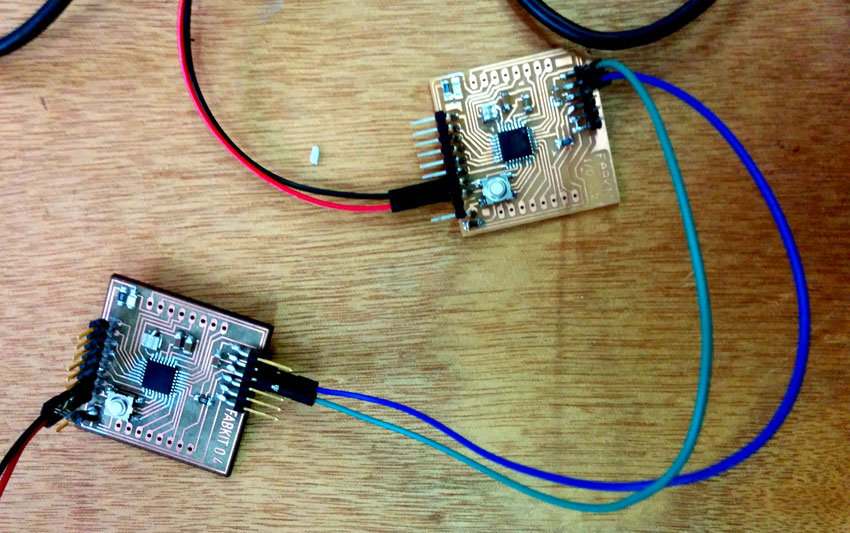
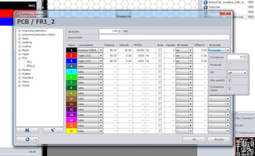
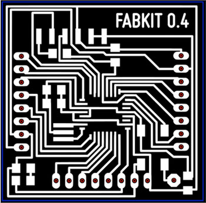
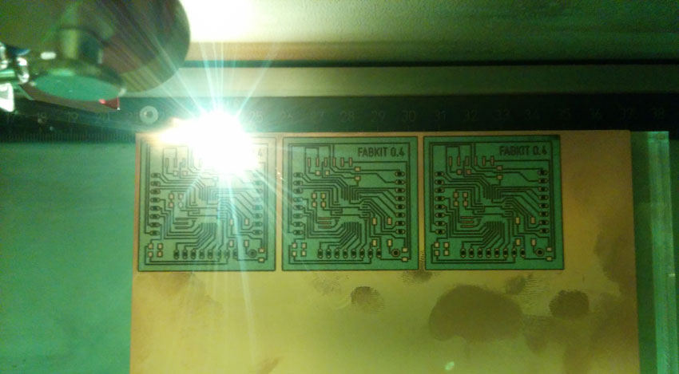
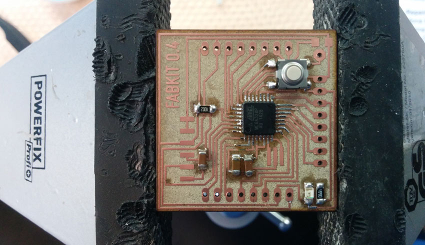
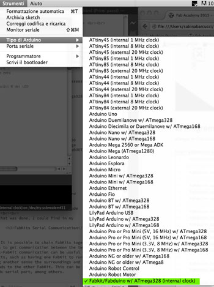
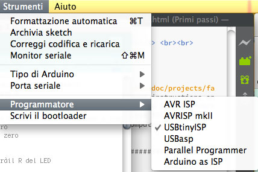
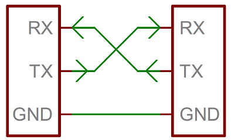
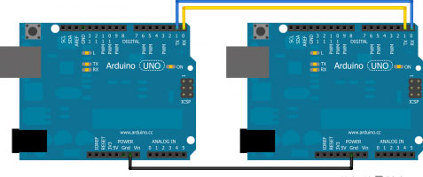
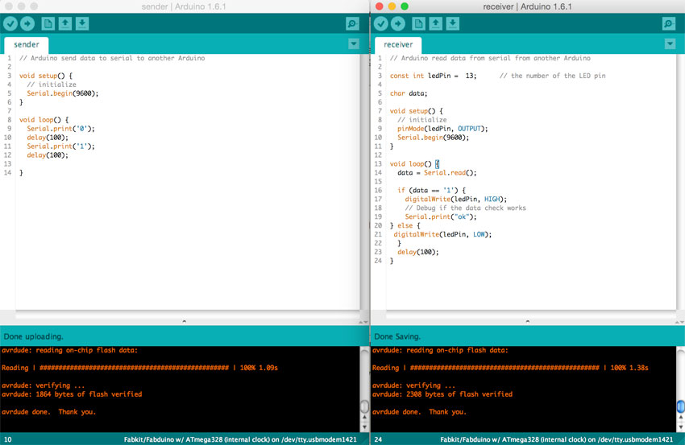

Weekly assignment: design and build a wired &/or wireless network connecting at least two processors.
For this assignment I went for making a FabKit 0.4 and to connect it with another fabKit via serial communication.

1) Making a FabKit 0.4
I decided to make, solder and program a FabKit, an Arduino-compatible board designed by David Mellis and based on an ATMEGA382P microcontroller, because this board will be useful for my final project. I started following this tutorial this tutorial on FabKit 0.4 by Massimo Menichinelli where I could donwload the several files to understand it, make it, stuff it and wire it.
To make the board, I have been at OpenDot FabLab to use their lasercutter, a Trotec Speedy 100 flexx. The flexx line of laser cutters has both CO2 and fiber laser technologies: 60 watt CO2 laser, 30 watt fiber laser.
Below you find a description of the laser settings from this OpenDot tutorial:


The black color is used for the first pass, and it is needed for engraving the copper away (otherwise we cannot cut the FR1 board). These are the settings:
Type: fiber laser.
Power: 80.00.
Speed: 20.00.
PPI/Hz: 20000.
Passes: 9.
Advanced:
Correction: 10.
High quality: yes.
Raster correction: yes.
The red color is used for the second pass, for cutting the holes in the FR1 board. These are the settings:
Type: CO2.
Power: 50.00.
Speed: 0.60.
PPI/Hz: 5000.
Passes: 3.
Advanced: Default
The blue color is used for the third pass, for cutting the border in the FR1 board. These are the settings:
Type: CO2.
Power: 80.00.
Speed: 0.60.
PPI/Hz: 5000.
Passes: 2.
Advanced: Default

Then I soldered the board, using the Bill of Material below reported.
I was quite scared of soldering the microcontroller, since the several pins to solder and their super tiny dimensions. Actually, this was quite easy, fast and surprisingly clean.

2) Programming a FabKit 0.4
Always in this tutorial, I found instructions on how to program the FabKit using the Arduino IDE.
First I added this text to the boards.txt files of the arduino application installed in my computer.
Once that was done, I could find in my arduino IDE a new board, the FabKit, among the others.

I selected USBtinyISP as programmer since I used the FabISP to burn the booloader of the FabKit.

The IDE feedback when I tried to "burn the bootloader" was always reporting connection problem and I struggled for a while before understanding that the board was already programmable. I tried the simple blink sketch and it worked (better to keep the reset button pushed while the code is uploaded on the FabKit).
Finally, I was ready to experiment with Networking and communication, connecting two FabKits to each other.
What is serial communication?
Embedded electronics is all about interlinking circuits (processors or other integrated circuits) to create a symbiotic system. In order for those individual circuits to swap their information, they must share a common communication protocol. Hundreds of communication protocols have been defined to achieve this data exchange, and, in general, each can be separated into one of two categories: parallel or serial.
Serial interfaces stream their data, one single bit at a time. These interfaces can operate on as little as one wire, usually never more than four.
A serial bus consists of just two wires - one for sending data and another for receiving. As such, serial devices should have two serial pins: the receiver, RX, and the transmitter, TX.

It’s important to note that those RX and TX labels are with respect to the device itself. So the RX from one device should go to the TX of the other, and vice-versa. It’s weird if you’re used to hooking up VCC to VCC, GND to GND, MOSI to MOSI, etc., but it makes sense if you think about it. The transmitter should be talking to the receiver, not to another transmitter.
FabKits Serial Bus Communication
It is possible to chain FabKits together in such a way as to get communication between the two. Having FabKit-FabKit communication can be useful for many projects, such as having one FabKit to run motors and having another sense the surroundings and then relay commands to the other FabKit. This can be done in several methods serial port, among others.
I followed this tutorial for the Networking and Communication assignment. It focuses on Arduino-Arduino communication through the serial ports (RX and TX). The Fritzing scheme below shows the simple connection among pcbs. Note that note that TX goes to RX and RX goes to TX.

To let the two FabKit communicate, I needed to prepare two sketches, the first sending a data (an input) to the second that had to give an output according to the data received: a first arduino as sender, and the second as receiver. When the FabKit sender sends via serial port "1", the FabKit receiver lights up a LED. When the sender sends a "0", the receiver shut down the LED.

Sender
The
FabKit sender sketch:
// Arduino send data to serial to another Arduino
void setup() {
// initialize
Serial.begin(9600);
}
void loop() {
Serial.print('0');
delay(100);
Serial.print('1');
delay(100);
}
Receiver
The
FabKit receiver sketch:
// Arduino read data from serial from another Arduino
const int ledPin = 13; // the number of the LED pin
char data;
void setup() {
// initialize
pinMode(ledPin, OUTPUT);
Serial.begin(9600);
}
void loop() {
data = Serial.read();
if (data == '1') {
digitalWrite(ledPin, HIGH);
// Debug if the data check works
Serial.print("ok");
} else {
digitalWrite(ledPin, LOW);
}
delay(100);
}